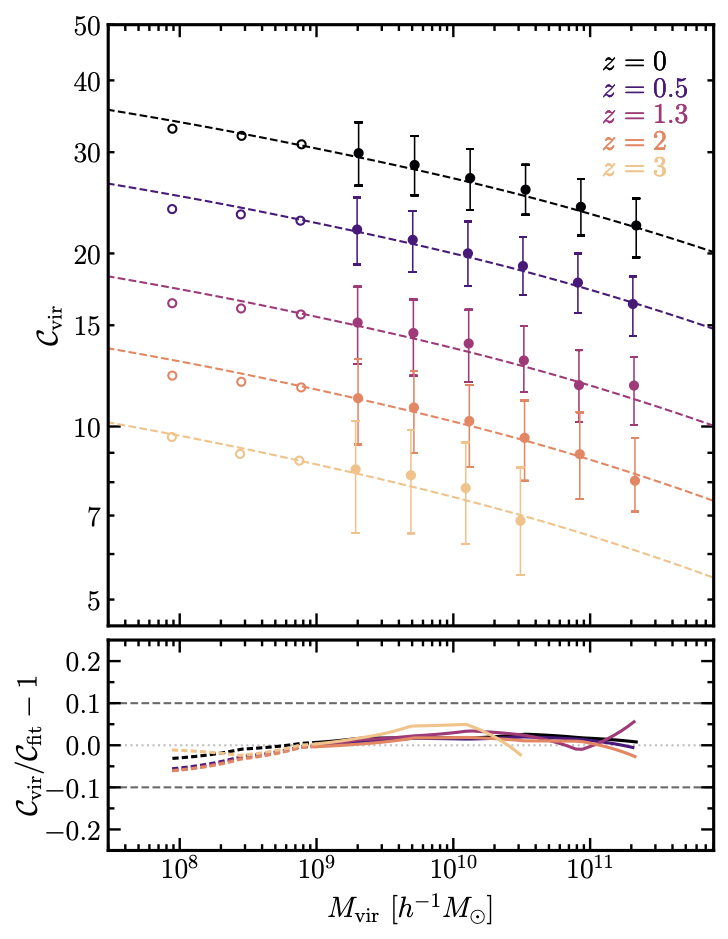
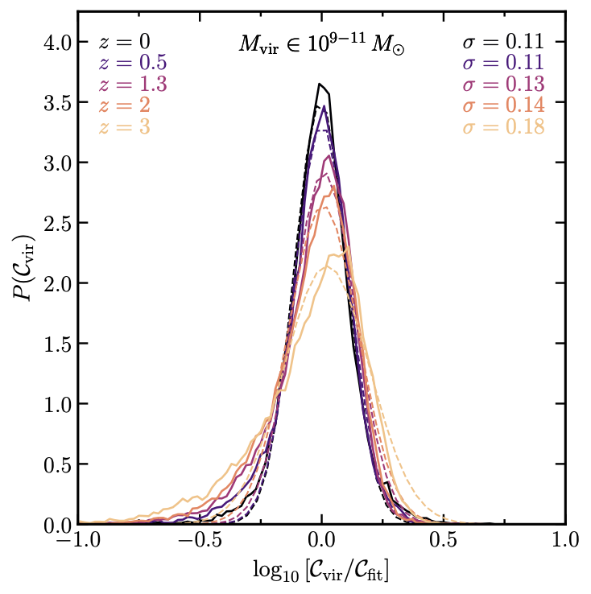

2018-2023: The projects I have spear headed and (mostly) went on into publishing as my time as a physics graduate researcher at Univeristy of California, Irvine.
Connecting the local, near-field galaxies to cosmic dawn
The James Webb Space Telescope (JWST) has begun to reveal important insights into the nature of galaxy formation at cosmic dawn. I unique amount of information can be obtained by connecting the present-day Milky Way-type galaxies and associated dwarf satellites to their progenitor populations at cosmic dawn using galaxy simulations. Of this population, we also find that the high-redshift progenitors of low-mass satellite galaxies are typical of the field population of galaxies at those redshifts, suggesting that archaeological near-field studies can provide an unbiased probe of low-mass galaxy formation at cosmic dawn.

Lensing profile to accuratly model projections of CDM field halos
This work introduces an analytic surface density profile for dark matter haloes that accurately reproduces the structure of simulated haloes of low-mass, making it useful for modeling line-of-sight perturbers in strong gravitational lensing models. Using a characteristic radius where the log slope of surface density is equal to -1, and an associated surface density, we can represent the expected lensing signal from line-of-sight halos statistically, for an ensemble of halo orientations, using a distribution of projected concentration parameters.
Statistical lens-population model for the projected structure
The line-of-sight (LOS) population of dark matter halo perturbers are an important contribution to lensing signals diagnosed in gravitational lensing studies. The density profiles of the LOS population are commonly described by fitting functions such as the NFW or Einasto models, but these approximations tend to break down when modeling the projected surface density from halo-to-halo. We have recently proposed a simple, accurate fitting function designed to robustly model the surface
mass-density of LOS halos expected in cdm, which are parameterized by the so-called projected concentration.
This model is extended for the LOS population by studying dark matter halos in a high-resolution $N$-body simulation. This sample allows us to present several statistical functions applicable for describing a population LOS halos for lensing studies, mainly the evolution of the projected concentration and the underlying scatter.


Probing the physics of the first stars through transients
The formation of first stars played a critical role in early Universe's cosmic evolution. A key function in theoretical astrophysics to understand the physics of the first stars is their initial mass function (IMF), a probability distribution function that is dependent on the stars' mass at formation. Unfortunately the form of the IMF is unknown! I propose a simple model to probe the shape of the IMF (dependent on two parameters) by future observations of their most violent deaths: Gamma-ray bursts and Pair-Instability Supernovae.


Correlated clustering impacts strong lensing signals
The effects of dark matter halos on strong gravitaitonal lensing (multiply formed images) are a key phenomena to probe to true nature of our Universe, as different dark matter models produce different predictions of how dark matter halos populate (abundance), form (structure), and congregate (cluster). In order to analyze strongly lensed images, a lensing model must be set up for a main, along with assumptions of how to populate halos from the source to the observer. This is typically split into two components, the substructure (halos within the main lens) and the line-of-sight halos (halos in the foreground and background outside the main lens. I explore a third component that is expected in the Standard Cosmological model, correlated clustering. Using a several cosmological simulations, with dark matter only and one that is more realistic (with baryons), I quantify the impact of correlated clustering in a strong lensing setting.
A cored dark matter profile for CDM galaxies
The Standard Paradigm (Cold Dark Matter) of cosmology predicts dark matter halos (without baryons) to have cusp (power-law rising) central densities, but galaxies from HI surveys shows halos are in fact cuspy (constant power-law) are their center. It is postulated that with the inclusion of baryons, stellar feedback at the galaxies center could be powerful to disperse the dark matter particle orbits, thus transitioning halos from cusp to core inner densities.
Using 54 high-resolution simulations (~ 0.5 TBs total) of realistic galaxies (ranging from ultra-faints to Milky Way-like), I study the core-creation relation and show that it is heavily dependent on the halo mass and stellar mass ratio. I then contrive an accurate density profile, the core-Einasto profile that accurately models, for the first time, the dark matter core size as a function of the stellar abundance and captures the shape of the entire dark matter distribution.
Furthermore, I devise a numerical model that capitalizes off of the quantative parameters I introduced with my core-Einasto profile.


Accurate mass estimates from dispersion-supported galaxies
The mass distribution of dwarf galaxies are believed to be dominated by dark matter, compared to their stars and gas. Therefore, the gravitational potential energies, especially at the center of these galaxies, are dark matter dominant. We can't see dark matter of course, but we can see the proper motions (motions compared to the background) of their stars, which are governed by the dark matter component of the galaxy. Since these galaxies are dispersion-supported (lacking a disk), I analytically derived a simplified mass estimator of the galaxies dark matter within a measurable observable (i.e., 3D and 2D half-light radius) starting with the Spherical Jeans equation. I then go on to compare these estimators to realistic galaxy simulations of dwarf galaxies.


Satellite dynamics of Milky Way-like galaxies
The Milky Way galaxy is one of the most important objects to study for various aspects in astrophysics, importantly, its context in the Standard Model of Cosmology - ΛCDM (Dark energy + Cold Dark Matter). Out of the many things to study on it, I spent a dedicated amount of time analyzing the dynamics of its satellite galaxies, i.e., dark matter subhalos (like the LMC, SMC, and the many other dwarf galaxies). With cosmological simulations with in a realistic universe (and others with dark matter only), I compared the dynamics of the simulated subhalos to several dynamically interested dwarf galaxies that we know today, like Leo I, Leo T, etc.